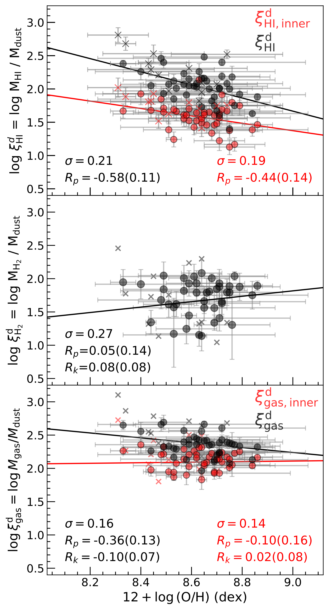
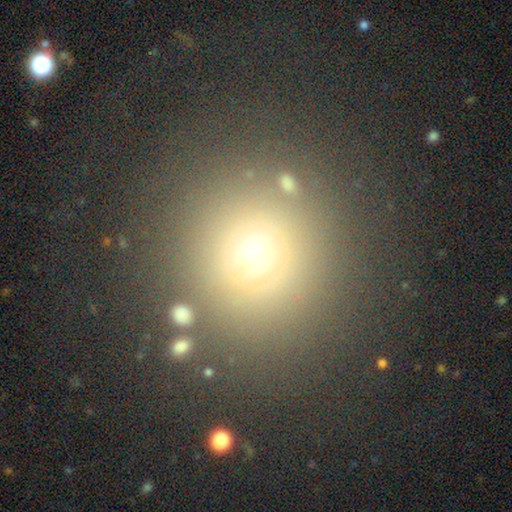

Email: lifujia@mail.ustc.edu.cn lifujia0928@gmail.com
Orcid: https://orcid.org/0000-0001-9472-2052
My primary research interest is using the 21-cm line of hydrogen (H I) to study the formation and evolution of galaxies, interstellar medium (ISM) properties, and the baryonic cycle. As the raw material for star formation, H I gas is not only detected in the inner disk of galaxies but also in the outermost regions. The H I disk is typically extended in most late- and early-type galaxies, which can trace star formation in the outer disk of galaxies and reveal the gravitational interactions with neighboring galaxies. In large-scale structures, H I also can be found in filaments, groups, and clusters. Furthermore, the H I kinematics of galaxies can be used to derive rotation curves with high spectral resolution, which in turn can help measure dark matter mass and test the dark matter models. With the next generation of large-scale and high-sensitivity H I surveys based on several new radio telescopes, such as ASKAP, MeerKAT, FAST, and the upcoming SKA, we are entering a new era for studying the fundamental science questions about galaxy formation, galaxy evolution, and cosmology.
1. The Interstellar Medium Scaling Relations Using Inner H I and an Application of Estimating Dust Mass.
2. Exploring the Origin of Cold Gas and Star Formation in a Rare Population of Strongly Bulge-dominated Early-type Galaxies.
3. Strong [O iii] λ5007 Compact Galaxies Identified from SDSS DR16 and Their Scaling Relations.
Weiyu Ding, Hu Zou, Xu Kong, Yulong Gao,
4. FEASTS: IGM Cooling Triggered by Tidal Interactions through the Diffuse H I Phase around NGC 4631.
Wang Jing, Dong Yang, S-H Oh, Lister Staveley-Smith, ...,
5. HiFAST: An H I data calibration and imaging pipeline for FAST.
Yingjie Jing, Jie Wang, Chen Xu, Ziming Liu, ...,
 We select a disk-like galaxy sample with observations of the H I, H2 and dust from Herschel Reference Survey (HRS), and derive inner Hi masses within the optical radius. We find that the inner gas-to-dust ratio is almost independent of gas-phase metallicity, and confirm that the inner gas mass (H I+H2) shows tighter relationships with dust mass and monochromatic 500 μm luminosity than the integral gas mass. It supports that dust is more closely associated with co-spatial cold gas than the overall cold gas. Based on the newly calibrated relationship between inner gas mass and dust mass, we predict dust masses for disk-dominated galaxies from the xCOLD GASS sample. The predicted dust masses show scaling relations consistent with fiducial ones in the literature, supporting their robustness. Additionally, we find that at a given dust mass and star formation rate (SFR), the galactic WISE W3 luminosities show significant dependence on the [NII] luminosity and the stellar mass surface density. Such dependence highlights the caveat of using the W3 luminosity as an integral SFR indicator and is consistent with findings of studies that target star-forming regions in more nearby galaxies and accurately derive dust masses based on mapping-mode spectroscopy.
Link: https://iopscience.iop.org/article/10.3847/1538-4357/accbc0
 We analyze the properties of a rare population, the strongly bulge-dominated early-type galaxies (referred to as sBDEs) with significant H I gas, using the databases from the FAST All Sky H I survey (FASHI) and the Arecibo Legacy Fast ALFA (ALFALFA) survey. We select the sBDEs from the Sloan Digital Sky Survey (SDSS) and cross-match with the FASHI-ALFALFA combined H I sample, resulting in 104 H I-rich sBDEs. These sBDEs tend to have extremely high H I reservoirs, which is rare in previous studies such as ATLAS3D. 70% of the selected sBDEs are classified as quiescent galaxies, even though they have a large H I reservoir. We study the properties of these sBDEs from five main aspects: stellar population, gas-phase metallicity, stacked H I spectra, environment, and spatially resolved MaNGA data. The majority of H I-rich sBDEs appear to show lower gas-phase metallicity and are located in significantly lower-density environments, suggesting an external origin for their H I gas. We find that star-forming sBDEs exhibit statistically higher star formation efficiency and slightly older stellar populations compared to normal star-forming galaxies, suggesting a recent star formation on Gyr-timescale. They also show narrower and more concentrated H I profiles compared to control star-forming galaxies, which may explain their higher star formation efficiency.
Link: https://iopscience.iop.org/article/10.3847/1538-4357/ad6b97